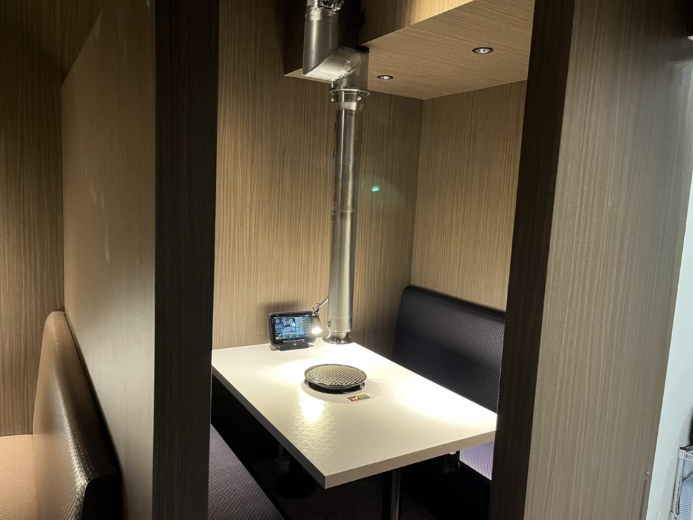

Service
事業内容
給排水衛生設備を中心に、電気・浄化槽・空調まで、建物の設備工事をまとめてお受けしています。住宅から商業施設、畜産施設、公共施設まで対応します。
5 Services
5つの事業
主軸の給排水衛生・電気・浄化槽に、空調設備と水回りリフォームを加えた5つの事業で、建物の設備をまとめてお引き受けします。

Plumbing
給排水衛生設備工事
水をいつも清潔な状態で当たり前に使えるよう、給排水管・衛生器具・給湯設備などの各種設備を設置・修理します。給水・排水の配管やポンプ、キッチンのシンクや浴槽まで幅広く対応し、見えない部分も見落とすことなく施工します。水道本管からの引き込みも対応します。
- 主な工事
- 給排水配管／水道引き込み／給湯設備／衛生器具設置／下水道接続
- 対象建物
- 戸建住宅・集合住宅・店舗・事務所・畜産施設・公共施設
- 関連資格・指定
- 給水装置工事主任技術者／下水道排水設備工事責任技術者／指定給水装置事業者（八匝水道企業団・多古町・旭市・香取市）／下水道排水設備指定工事店（旭市・香取市）

Electrical
電気工事
前身である「及川電気設備」より、電気工事の業務も受け継いでいます。照明のLED化や電源の引き込み、電気配線の整備、盤の設置など、電気まわりの幅広いニーズに対応。建物全体の省エネ化に向けたご相談も承ります。
- 主な工事
- 照明のLED化／電源の引き込み／電気配線の整備／盤の設置
- 対象建物
- 住宅・店舗・事務所・畜産施設
- 関連資格・届出
- 第二種電気工事士／電気工事業届出（千葉県知事届出 第20220081号）

Septic Tank
浄化槽工事
汚れた水を微生物の力で分解し、河川へと放流するための浄化槽。新設・移設の工事を請け負い、地域の住環境の向上に貢献します。軽微な不具合や故障にも対応し、交換工事では自治体の補助金が利用できる場合はご案内します。
- 主な工事
- 浄化槽の新設・移設・交換／不具合・故障への対応
- 対象建物
- 戸建住宅・店舗・事務所・公共施設
- 関連資格・届出
- 浄化槽設備士／浄化槽工事業届出（千葉県知事（届-4）第1770号）

Air Conditioning
空調設備工事
温度だけでなく、湿度や気流、においまで快適にコントロールできるよう、建物の規模や用途に応じた空調設備をご提案します。設備の見直しによるエネルギー効率の向上も、あわせてご相談ください。
- 主な工事
- 空調設備の設置・更新／換気設備
- 対象建物
- 住宅・店舗・事務所
- 関連資格
- 2級管工事施工管理技士
Matrix
工事×建物 対応一覧
| 住宅 | 店舗・事務所 | 畜産施設 | 公共施設 | |
|---|---|---|---|---|
| 給排水衛生 | ●対応 | ●対応 | ●対応 | ●対応 |
| 電気 | ●対応 | ●対応 | ●対応 | ●対応 |
| 浄化槽 | ●対応 | ●対応 | ●対応 | ●対応 |
| 空調 | ●対応 | ●対応 | ○ご相談ください | ○ご相談ください |
● 対応 ○ 内容によりご相談ください
For Home
個人のお客様へ
浴室・キッチン・トイレ・洗面台などの水回りリフォームや、水漏れのご相談、浄化槽の交換も承ります。事前のご相談・お見積りは無料です。
Area
対応エリア
千葉県匝瑳市を拠点に、旭市・香取市・成田市・山武市など千葉県内で対応しています。内容によっては県外でのご対応も可能です。
エリア外でも、まずはお気軽にご相談ください。